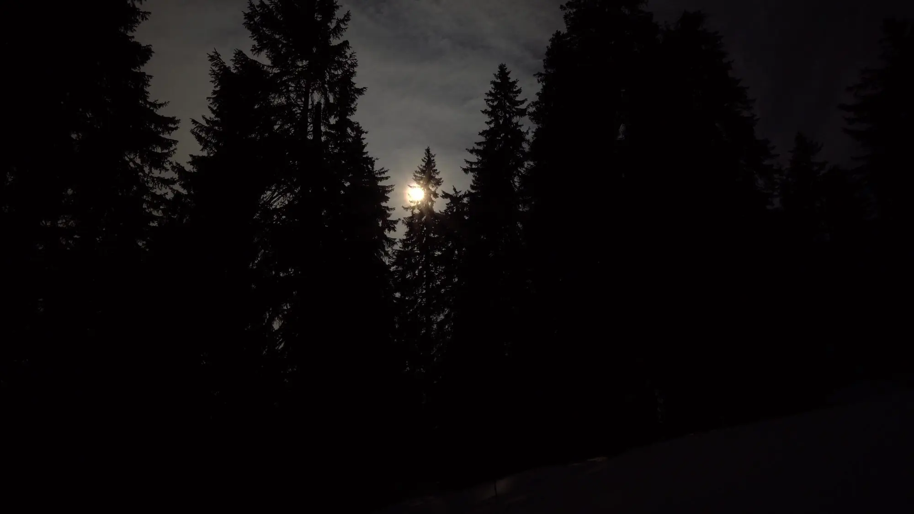
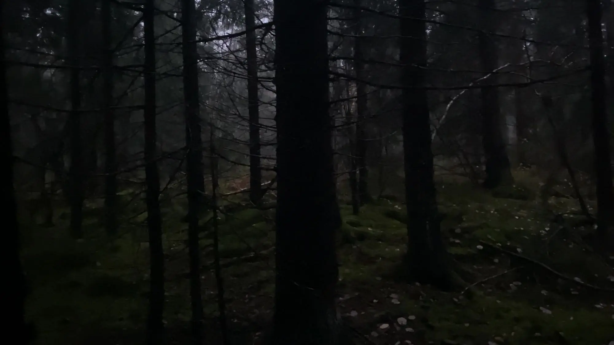
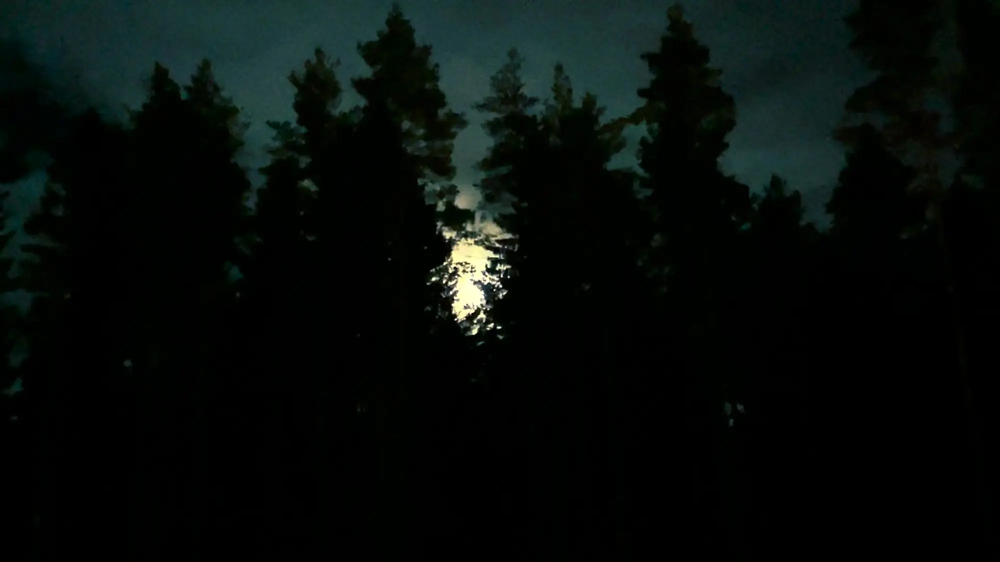

Long, slow music for prayer, and a place to pray together.
Lowest Hallowed: instrumental Christian dark ambient and dungeon synth, made for prayer. Think neoclassical with a darker edge, with unblack undertones.
A new album comes out every month. The night before, everyone listens and prays online together. Prayer requests go in the chatbox.

“What, could ye not watch with me one hour?”

The music
Every album on Bandcamp.
Listen on Bandcamp
The Prayer Watch
Once a month, join Lowest Hallowed Prayer Watch. One album, one night, many prayers.
Join the next Prayer Watch
Who should listen
You like dark, slow, reverent music: Christian dark ambient, dungeon synth, unblack, neoclassical, or black metal. You want to pray.